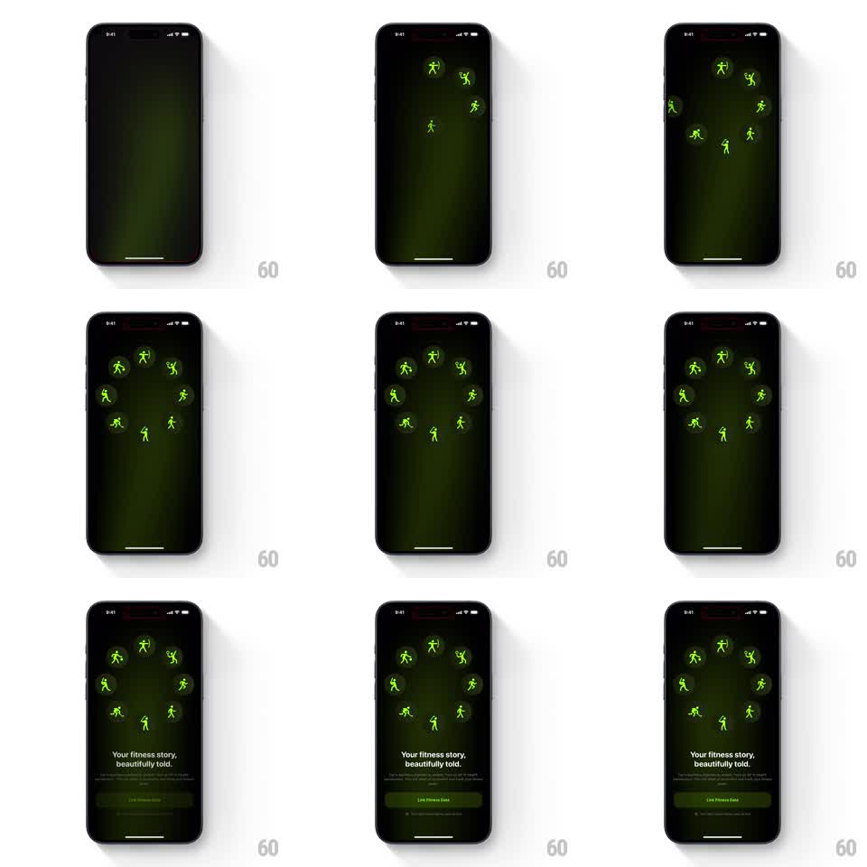

Media
Frame-by-frame

Rebuild this animation 1:1: a fitness app's onboarding intro - neon green runner icons scatter onto a dark stage, orbit, and settle into a circular ring formation, followed by staggered headline and button reveals.

Rebuild this animation 1:1: a fitness app's onboarding intro - neon green runner icons scatter onto a dark stage, orbit, and settle into a circular ring formation, followed by staggered headline and button reveals. ## Integration Integration: stack-agnostic spec - springs given as stiffness/damping, timed motions as duration + curve; map every value to your framework and animation library of choice. ## Scene A near-black screen with a faint green radial glow at center. Neon green fitness icons (runner figures in different poses) appear one by one at scattered positions, then travel along curved paths into a perfect ring of eight evenly spaced icons at mid-screen. Below, the headline "Your fitness story, beautifully told." fades in, then small print and a solid "Link Fitness Data" button. ## Motion spec Pattern: orbit-to-ring formation with staggered text reveal, ~4s total. - Icons fade and scale in at random scattered positions (spring stiffness 260 damping 18, 120ms stagger). - Each icon travels on an arc path to its slot on the ring (800ms, ease-in-out), rotating slightly as it flies, all converging within the same beat. - Once formed, the ring holds with a gentle idle: icons bob in place (plus/minus 4px, 2s period, offset phases) and the green glow behind them pulses softly (2.5s period). - Headline fades and rises 12px (400ms), small print follows 150ms later, the button rises and fades in last (spring stiffness 300 damping 24). ## Calibration - The ring is geometrically exact: equal spacing, equal distance from center, icons upright when settled. - The scatter phase is brief - the formation is the payoff and gets the most screen time. ## Reduced motion Icons fade directly into ring positions; text fades. ## Don't miss - Icons keep their individual glow halos through the flight. - The headline, subtext, and button never animate together - strict stagger.